Locații de nuntă în județul Harghita
- locații în director
- 13
- cu cazare în registrul SITUR
- 7
- medie ponderată Google
- 4,4 / 5
- evaluări Google
- 8.933
Cum alegi unde mergi la vizionare
În Harghita, folosiți localitatea ca prim filtru între Ciumani, Miercurea Ciuc, Sub Cetate și Toplița. Pentru o ceremonie târzie în exterior, vizitați proprietatea la o oră apropiată de cea dorită. Veți vedea unde cade umbra și ce traseu au invitații până la cină.
La pensiunea Borsika din Ciumani, zona de joacă din curte apare în relatarea unui vizitator. Dacă unul dintre criterii este ca părinții să poată sta aproape de copii, verificați din ce loc se vede zona de joacă și dacă pot fi așezate mese acolo. Cereți o fotografie în configurație de eveniment înainte să comparați pensiunea cu un salon din Miercurea Ciuc.
Două adrese pentru o zi de vizionări
Pe hartă, între aceste două proprietăți sunt 4,8 km în linie dreaptă. Deschide indicațiile de drum din fișe ca să vezi traseul pe șosea înainte de a stabili a doua întâlnire.
- Pensiunea Castelul · Str. Principala nr 1087, 537135 Lăzarea
- Filo Hotel Wellness & Spa · Strada Kossuth Lajos 222, 535500 Gheorgheni
Explorează după localitate
Toate locațiile din județul Harghita
Ordinea ține cont de nota Google și de numărul evaluărilor. Cum calculăm ordinea
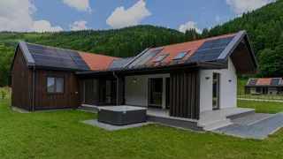
Fotografie a locației · Sursa fotografiei Sub Cetate · Vilă
Eskaperdo Resort
Vile cu jacuzzi în pădure la Poiana Târnavei, Harghita, testate de un grup de aproape 50 de persoane. Ce să întrebi pentru o nuntă mică.
F9QW+W6 Poiana Târnavei, 537350 Sub Cetate+40 743 880 688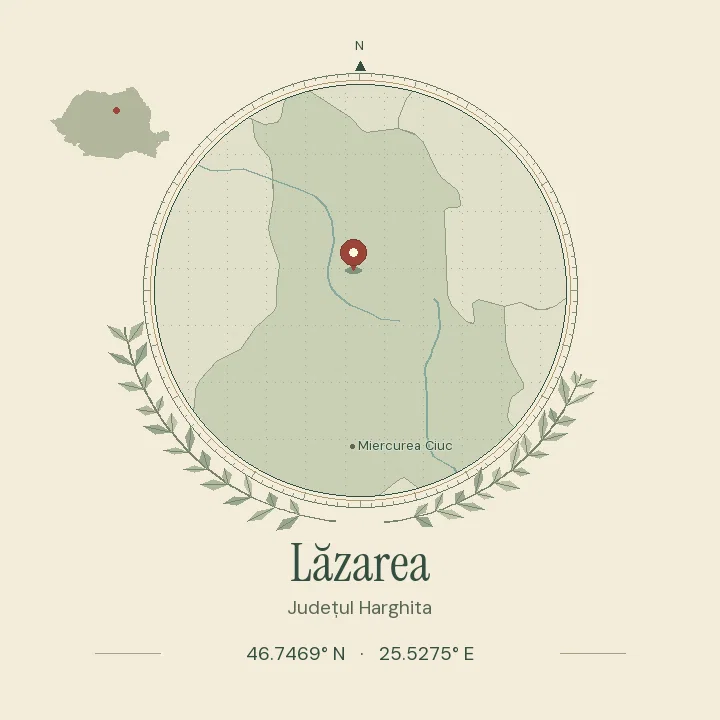
Hartă ilustrată Lăzarea · Pensiune
Pensiunea Castelul
Pensiunea Castelul din Lăzarea, Harghita: gazde lăudate în 814 recenzii, curte interioară și restaurant. Potrivită pentru cazarea invitaților.
Str. Principala nr 1087, 537135 Lăzarea+40 742 029 286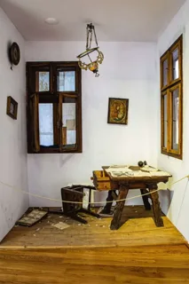
Fotografie a locației · Sursa fotografiei Miercurea Ciuc · Castel
Castelul Mikó
Fortificația din Miercurea Ciuc care găzduiește Muzeul Secuiesc al Ciucului, cu curte folosită pentru teatru și film. Ce să întrebi.
Piața Cetății 2, 530132 Miercurea Ciuc+40 266 372 024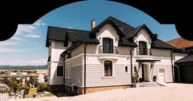
Fotografie a locației · Sursa fotografiei Toplița · Hotel
Strindberg Boutique Hotel
Strindberg Boutique Hotel. Pentru o cină cu puțini apropiați, întrebați dacă grătarul se poate organiza pentru grupul vostru și când se stabilește meniul.
Strada Măgura 24, 535700 Toplița+40 770 901 901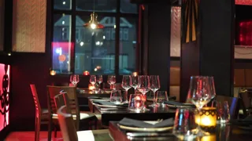
Fotografie a locației · Sursa fotografiei Ciumani · Pensiune
Borsika pensiune si restaurant
Pensiune cu restaurant în Ciumani, Harghita: curte cu loc de joacă, mic dejun inclus și preparate locale lăudate. Ce să întrebați pentru o masă restrânsă.
Strada Déllő, 537050 Ciumani+40 745 322 411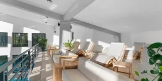
Fotografie a locației · Sursa fotografiei Harghita-Băi · Hotel wellness
Ozon
Ozon, Harghita-Băi. Dacă ați ales Harghita-Băi pentru un weekend cu părinții și prietenii, puteți propune separat o după-amiază de relaxare.
Str. Ozon 1, 530002 Harghita-Băi+40 790 843 793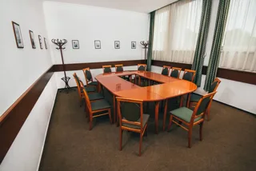
Fotografie a locației · Sursa fotografiei Odorheiu Secuiesc · Hotel
Hotel Târnava
Hotel Târnava, Odorheiu Secuiesc. La Târnava, o familie cu doi copii a stat într-un Junior Suite orientat spre centru.
Piața Városháza 16, 535600 Odorheiu Secuiesc+40 266 213 963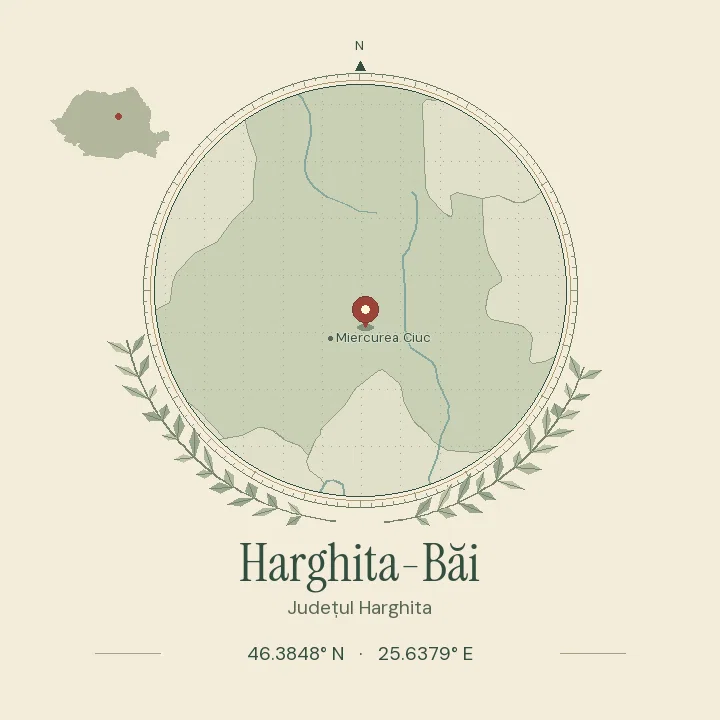
Hartă ilustrată Harghita-Băi · Pensiune
Pensiunea Tófalvi
Pensiunea Tófalvi. Un oaspete care a revenit iarna la Tófalvi descrie o pensiune de familie aproape de pârtie, de snowtubing și de patinoar.
Strada Harghita Băi, 530002 Harghita-Băi+40 746 641 080Hartă ilustrată Harghita-Băi · Pensiune
Pensiunea Biro
Pensiunea Biro, Harghita-Băi. În Harghita-Băi, apropierea pârtiei poate conta chiar și atunci când nunta este planificată pentru alt anotimp.
Harghitafurdo 54 sz, 530002 Harghita-Băi+40 753 525 159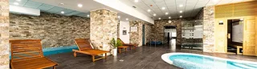
Fotografie a locației · Sursa fotografiei Gheorgheni · Hotel wellness
Filo Hotel Wellness & Spa
Filo Hotel Wellness & Spa. Pentru Filo din Gheorgheni, restaurantul și componenta wellness apar la aceeași adresă, strada Kossuth Lajos 222.
Strada Kossuth Lajos 222, 535500 Gheorgheni+40 743 700 094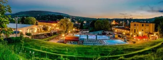
Fotografie a locației · Sursa fotografiei Odorheiu Secuiesc · Hotel
Septimia Resort
Septimia Resort, Odorheiu Secuiesc. Într-o minivacanță la Septimia, piscinele au fost atracția principală pentru un grup de oaspeți.
Strada Orbán Balázs 106. 535600, 535600 Odorheiu Secuiesc+40 742 049 160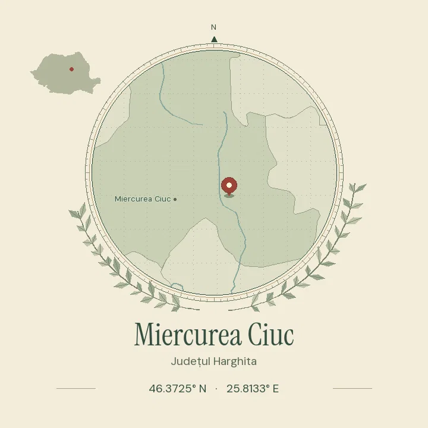
Hartă ilustrată Miercurea Ciuc · Hotel
Park Hotel
Park Hotel, Miercurea Ciuc. Dacă și tu cunoști sala dintr-o vizită anterioară, verifică ce era amenajat atunci special pentru acea petrecere.
Strada Szék 58A, 530201 Miercurea Ciuc+40 752 243 280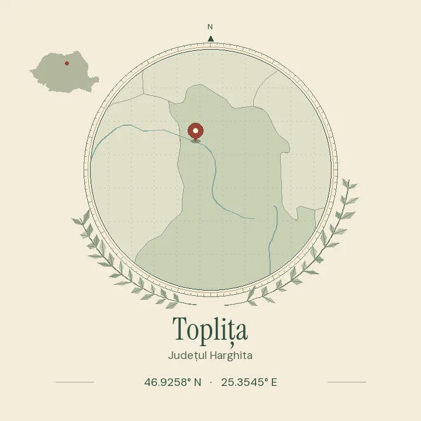
Hartă ilustrată Toplița · Hotel
Hotel Mureș
Hotel Mureș, Toplița. Un client din Toplița spune că în camera sa a găsit un calorifer electric și că încălzirea nu i s-a părut suficientă.
Strada Libertății 6, 535700 Toplița+40 266 206 890
Întrebări despre locațiile din județul Harghita
Unde pot dormi invitații în județul Harghita?
În registrul de cazare SITUR găsim Strindberg Boutique Hotel (30 de locuri de cazare), Ozon (57 de locuri de cazare), Hotel Târnava (122 de locuri de cazare). Verifică ce camere sunt libere pentru noaptea evenimentului.
Ce proprietăți din județul Harghita au grădină sau terasă?
Strindberg Boutique Hotel (grădină, terasă); Septimia Resort (terasă); Hotel Mureș (terasă). Cere administratorului condițiile de folosire pentru o petrecere privată.
Care locație din județul Harghita are cele mai multe evaluări Google?
Septimia Resort are 3.514 evaluări în profilul Google folosit la documentare. Evaluările acoperă și alte experiențe la proprietate, inclusiv vizitele fără eveniment.
Unde apare o intrare accesibilă în județul Harghita?
Profilurile Google indică o intrare accesibilă la Eskaperdo Resort, Castelul Mikó. Pentru o cununie în exterior, cere detalii despre traseul dintre intrare și zona cu scaune.